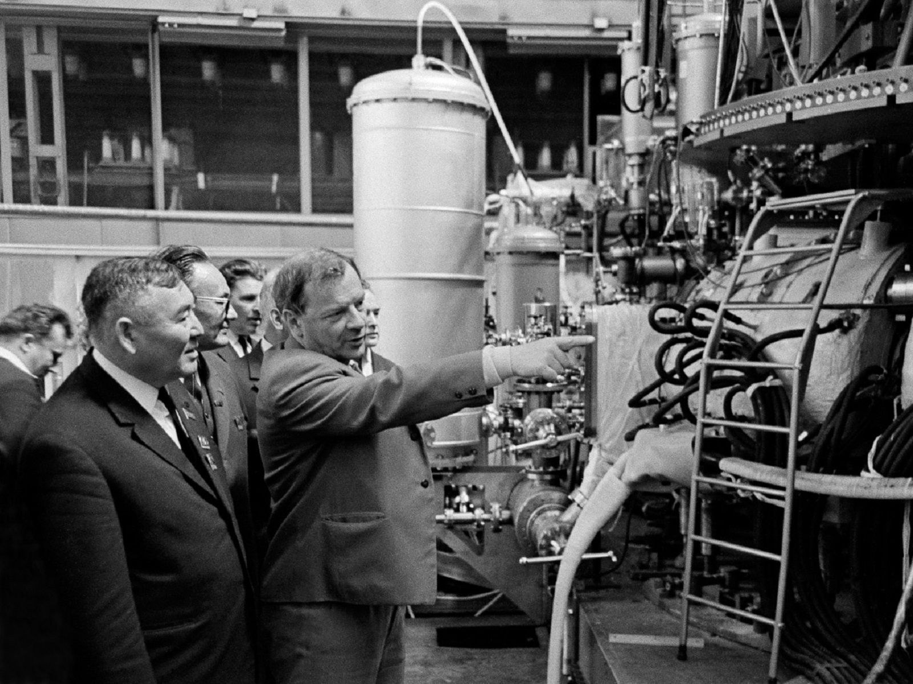

Science across the Iron Curtain
Why should a scientist believe a result from a rival country?
Prior knowledge
- Secrecy ended at Geneva in 1958, and the tokamak was a Soviet design of the 1950schapter Secret beginnings: fusion research to the 1950s
- The Doppler effect: a moving source or reflector shifts the wavelength of a wave (earlier physics courses)
Think about it
It is August 1968. In Novosibirsk, in the middle of Siberia, a Soviet physicist tells an international conference that his machine has heated a plasma to about ten million degrees and held it far longer than any other machine in the world. If he is right, fusion research has found its way forward. If he is wrong, the West could waste years and millions copying a mistake.
The Western scientists in the room cannot visit his laboratory. Their governments and his are rivals in the Cold War, and nuclear research is watched by security services on both sides.
How could anyone find out whether the result was true?
Think about it: whom do you believe?
Discuss with a partner, then write two or three sentences. Think of a surprising claim you have seen in the news or online (a new record, a miracle product, a discovery). What made you believe it or doubt it? Was it who made the claim, or what evidence they showed?
Word bank
a claim · evidence · to trust · to doubt · independent · to check · biased
Sentence starters
- I believed / doubted it because …
- The evidence was …
- I would trust it more if …
Pair work: each of you gives one example; then decide together what made each claim believable.
Model answer
I once saw a video claiming that a new battery charges a phone in one minute. I doubted it, because it came from the company selling the battery and there were no tests by anyone else. I would believe it more if an independent laboratory or a consumer magazine had measured it. My partner believed a sports record, because it was measured with official timing and filmed by many cameras.
Assess your own answer
Tick the points your own answer already contains.
Review the theory.
Hint 1: a guiding question
Who gained if people believed the claim?
Hint 2: what is the connection
Could anyone else check it?
Predict
Make your predictions before investigating 2 questions
Prediction 1: settling the question
Prediction 2: hot electrons and laser light
Investigate
How to work with the sources
Read the introduction together. Then work in pairs: partner A reads Sources A and C, partner B reads Sources B and D, and both read Source E. For each source, note (1) what type of source it is, (2) one fact it gives, and (3) whether this fact is scientific evidence or a political circumstance. Then explain your sources to your partner.
Word bank
the Iron Curtain · a tokamak · an electron temperature · confinement · Bohm diffusion · runaway electrons · indirect · direct · a method · to verify · independent · scattering · a laser · surveillance · a co-author
Sentence starters
- Source … is a … written by / based on …
- It tells us that …
- This is evidence, because it can be checked by …
- This is a circumstance: it explains why people …
- The source is reliable / less reliable because …
Before you read the sources
In 1968 the world was divided by the Iron Curtain, the border between the Soviet Union and its allies in the East and the countries of Western Europe and North America. Travel across it was difficult, and scientists in nuclear research were watched by security services on both sides. In August 1968, Warsaw Pact armies invaded Czechoslovakia to end the reforms of the Prague Spring.
Fusion research had been open since the Geneva conference of 1958, but it was stuck. Most machines lost their plasma much faster than theory predicted, at a rate known as Bohm diffusion. If that rate was a law of nature, a fusion reactor would be impossible. The five sources below follow what happened next. They are short texts written for this course from historical documents; words in quotation marks are the original words.
Source A: Novosibirsk, August 1968
Type: a summary of results presented at a scientific conference. Based on the International Atomic Energy Agency's conference of 1–7 August 1968 and on later accounts.
At the third IAEA conference on plasma physics and controlled fusion research, held in Novosibirsk in Siberia, Lev Artsimovich, the head of the Soviet fusion programme, presented results from the T-3 tokamak at the Kurchatov Institute in Moscow. T-3 had reached an electron temperature of about $1\ \text{keV}$, roughly ten million degrees, and it held its energy for more than $10\ \text{ms}$. This was many times better than the Bohm rate and about ten times better than any other machine in the world. The temperature was not measured directly: it was calculated from the magnetic properties of the plasma.

Source B: Why the West doubted
Type: a summary of the scientific objections, based on histories of the tokamak.
Many Western physicists did not accept the T-3 temperature. Already in 1965, when Artsimovich had shown earlier, smaller improvements, Lyman Spitzer of Princeton had questioned the Soviet measurements. The critics' main argument was physical: the magnetic method measures the total energy of the electrons. A small group of extremely fast runaway electrons, accelerated by the electric field that drives the current, could carry a lot of energy while the bulk of the plasma stayed much colder. Then the true temperature would be far lower than claimed. The Soviet scientists answered that their plasma was in thermal equilibrium, but with their method they could not prove it.
Source C: An invitation across the Iron Curtain
Type: a summary of memories of the people involved, published by the ITER Organization and in a biography of Derek Robinson.
Artsimovich made an unusual offer to Bas Pease, the director of the British fusion laboratory at Culham: a British team could come to Moscow and measure T-3 themselves. Culham had used a new laser method for measuring plasma temperatures for about five years, and the British wanted to test it on the best machine in the world. In December 1968, less than six months after Novosibirsk, the team was chosen: Nicol Peacock, Mike Forrest, Peter Wilcock and Derek Robinson, with a technician, later known together as the Culham Five. British rules said that a person with valuable knowledge could travel to the Soviet Union only if "properly accompanied by a reliable person". In Moscow the team felt watched: once, a broken light bulb that the Robinsons had mentioned at breakfast was replaced before they came back. Forrest later wrote that they felt safe "enjoying the powerful patronage of Lev Artsimovitch" (the original spells his name with -tch; it is the same Artsimovich).
Source D: Five tonnes of equipment and a laser
Type: a summary of the team's own accounts and of their scientific paper (Peacock, Robinson, Forrest, Wilcock and Sannikov, Nature, November 1969).
In the spring of 1969 the team arrived at the Kurchatov Institute with about five tonnes of equipment. They opened the machine to fit windows, built optical benches that did not shake, and placed a powerful ruby laser in the basement under the tokamak. Vibrations from the huge generators that powered T-3 made the floor move "like the skin of a drum". At first the scattered light was lost in the noise, and the team had to make the laser much more powerful. On 22 July 1969 the signal finally appeared, and a short note in Robinson's notebook recorded an electron temperature of about $1\ \text{keV}$. By early August they had measured about 88 plasma shots. Most showed electron temperatures of about ten million degrees, as Artsimovich had said. The results were phoned to Culham. The paper in Nature reported electron temperatures from $100\ \text{eV}$ to $1\ \text{keV}$ and agreed with the other methods where they could be compared. One of its five authors, V. V. Sannikov, was a Soviet scientist.
Source E: The tokamak stampede
Type: a summary of what laboratories did after 1969, based on histories of the tokamak and the stellarator and on the ITER Organization's account.
The British measurement changed fusion research. At Princeton, the stellarator Model C was shut down in December 1969 and rebuilt as a tokamak, the Symmetric Tokamak, which started in May 1970 and within months matched the T-3 results. Laboratories in the United States, France, Japan and Germany also built tokamaks, and the tokamak became the main road to fusion. The Soviet physicist Evgeny Velikhov later said that the British measurement "led to the beginning of active research on tokamaks all over the world". Today's largest fusion experiment, ITER, is a tokamak.
Question on Sources A and B
Answer this after you and your partner have explained your sources to each other. Source A says that the T-3 temperature was calculated from the magnetic properties of the plasma. Source B explains the critics' argument.
Evidence or circumstance?
Source question: why invite a rival?
Use Sources C and D. Discuss with your partner, then write three or four sentences: why did Artsimovich invite British scientists to measure his machine, and why did the British accept, although the two countries were Cold War rivals? Give one reason for each side and name the source.
Sentence starters
- Artsimovich invited them because …
- According to Source C, …
- The British accepted because …
- Both sides gained, because …
Pair work: partner A explains Artsimovich's side, partner B the British side; then write together.
Model answer
Artsimovich invited the British because his result was doubted in the West, and an independent measurement by Western scientists was the best way to prove it (Source C). He was confident that the result was correct, so he had little to lose. The British accepted because they wanted to test their new laser method on the best plasma in the world and to find out whether the tokamak really worked (Source C). Both sides gained from the cooperation, even though the political situation was tense and the team was watched (Sources C and D).
Assess your own answer
Tick the points your own answer already contains.
Review the theory.
Hint 1: a guiding question
What did Artsimovich need that only Western scientists could give him?
Hint 2: what is the connection
What did the Culham team want to test?
Investigate the evidence: reading the width
Values calculated by a model · Widths calculated for this course with the Doppler formula for a ruby laser (694 nm), light observed at right angles to the beam, full width at half maximum. The measured width is the value that matches the temperature the Culham team reported, not a number from their paper.
Look back at your Prediction 2. The table gives the width of the scattered spectrum, calculated for three electron temperatures. In Moscow in 1969 the scattered light from T-3 had a width of about $100\ \text{nm}$.
| Electron temperature $k_\text{B} T_\text{e}$ (keV) | Width of the scattered spectrum (nm) |
|---|---|
| 0.10 | 32 |
| 0.40 | 65 |
| 1.6 | 129 |
How Thomson scattering works
When laser light passes through a plasma, a tiny fraction of it is scattered sideways by the free electrons. This is Thomson scattering. An electron that moves towards the detector scatters the light with a slightly shorter wavelength, and one that moves away with a slightly longer wavelength, because of the Doppler effect. In a plasma the electrons move in all directions at random, so the scattered light is spread over a range of wavelengths around the laser's own wavelength, $694\ \text{nm}$ for a ruby laser.
The hotter the electrons, the faster they move, and the wider the spread. So the width of the scattered spectrum gives the electron temperature directly, from the motion of the bulk of the electrons. A few runaway electrons cannot fake it, because they would add only a weak, far-away tail to the spectrum. And the method does not depend on the Soviet magnetic measurements at all. Its difficulty is that very little light is scattered, which is why the team needed such a powerful laser and why the vibrations and the noise were such a problem.
Theory
Key idea
Scientists judge a result by its evidence: measurements that others can check, made by a method whose limits are understood. The circumstances of a result, such as who made it, in which country and during which political crisis, can explain why people trusted or doubted it, but they are not evidence about nature.
In 1968 the circumstances made Western scientists suspicious: T-3 was a Soviet machine in the middle of the Cold War, and earlier claims such as ZETA's had been wrong. But their doubt also had a scientific reason: the temperature came from an indirect method that runaway electrons could fool. The way to settle the question was independent verification: a different team, with its own equipment and a different method, measuring the same plasma. Thomson scattering measured the bulk electron temperature directly, and it agreed with the Soviet result.
Independent verification matters because every method has hidden weaknesses and every team has hopes. A result that two independent methods agree on is much stronger than a result that one team repeats many times. The T-3 story also shows that cooperation can serve both sides: Artsimovich gained trust for his result, and the British tested their method on the best plasma in the world.
Common misconception
"The British confirmed the result because East–West relations had improved." The political situation was not good in 1968–1969, and the team worked under security rules and surveillance. The result was accepted because the measurement was independent and direct, not because of politics.
A second mistake is to think that repeating a measurement is the same as verifying it. Repeating the same indirect measurement many times does not remove its systematic weakness. A different method does.
Back to your predictions
Compare your two predictions with the sources and the physics. Then answer the opening question in two sentences: why should a scientist believe a result from a rival country?
Would you change your prediction?
Examples
Once you have studied the chapter's theory, move on to the guided examples. In the first you follow a worked solution step by step; in the next ones you make the choices yourself, and the hints help if you get stuck.
Ten million degrees?
The Culham team measured an electron temperature of about $1\ \text{keV}$. Physicists give plasma temperatures as an energy $k_\text{B} T$ in electronvolts. Calculate the temperature $T$ in kelvins that corresponds to $k_\text{B} T = 1.00\ \text{keV}$. Give $T$ in millions of kelvins: for example, type $3.5$ for $3.5 \cdot 10^{6}\ \text{K}$.
Hint 1: a guiding question
First convert $1.00\ \text{keV}$ to joules: $1\ \text{eV} = 1.602 \cdot 10^{-19}\ \text{J}$ and $1\ \text{keV} = 1000\ \text{eV}$.
Hint 2: what is the connection
Solve $E = k_\text{B} T$ for $T$: $T = E / k_\text{B}$, with $k_\text{B} = 1.381 \cdot 10^{-23}\ \text{J/K}$.
Hint 3: an intermediate step
$E = 1.602 \cdot 10^{-16}\ \text{J}$
Show the solution
Given
${k_\text{B} T = E = 1.00\ \text{keV}}$; the Boltzmann constant ${k_\text{B} = 1.381 \cdot 10^{-23}\ \text{J/K}}$; ${1\ \text{eV} = 1.602 \cdot 10^{-19}\ \text{J}}$
Find
the temperature $T$ in kelvins
Principle
Physicists state a plasma temperature as the energy $k_\text{B} T$, the typical energy of one particle's random motion. To get kelvins, divide this energy by the Boltzmann constant.
Formula
$E = k_\text{B} T$, so $T = \dfrac{E}{k_\text{B}}$
Unit conversions
Substitution
$$\begin{aligned} T &= \frac{1.602 \cdot 10^{-16}\ \text{J}}{1.381 \cdot 10^{-23}\ \text{J/K}} \\ &= 1.160 \cdot 10^{7}\ \text{K} \end{aligned}$$
Answer
$T \approx 1.16 \cdot 10^{7}\ \text{K}$
That is, $11.6$ million kelvin, or about $12$ million. Three significant figures, as in $1.00\ \text{keV}$.
Reasonableness
The sources speak of "about ten million degrees", which fits. The $273$-degree difference between the kelvin and Celsius scales does not matter at this size. The centre of the Sun is at about $15$ million kelvin, so T-3's electrons were nearly as hot as the Sun's core, although the plasma was far less dense.
Role-play: Culham, December 1968
Work in groups of three or four. It is December 1968 at Culham. Should the laboratory send a team to Moscow? Each person takes one role, prepares for two minutes, and speaks for about one minute. Then the director decides.
- The director (Bas Pease) chairs the meeting and must decide.
- A laser scientist wants to go: the new method could finally settle the question.
- A sceptical physicist thinks the Soviet result is probably wrong and the trip a waste of time and money.
- A security officer worries about secrets, surveillance and the political situation after Czechoslovakia.
Word bank
a risk · a benefit · a measurement · to settle a question · to waste · surveillance · trust · independent
Sentence starters
- In my role, I think we should / should not …, because …
- The main risk is …, but …
- If the result is correct, then …
- I see your point, but the evidence …
- As director, I have decided to …, because …
Write: a short report for a science magazine
Write a short report of 80–120 words for a science magazine in November 1969: what the Culham team did in Moscow, what they found, and why independent verification matters. Use at least three words from the word bank and one sentence starter. If time runs short, finish it at home.
Sentence starters
- Last year, Soviet scientists reported that …
- Many physicists doubted it, because …
- The team measured … by …
- Independent verification matters because …
Model answer
Soviet fusion result confirmed by British team. Last year Soviet scientists reported that their T-3 tokamak had heated a plasma to about ten million degrees. Many Western physicists doubted it, because the temperature had been calculated indirectly. This year a team from Culham travelled to Moscow and measured the electron temperature directly by shining a laser through the plasma and analysing the scattered light. Their result, published in Nature, agrees with the Soviet value: about 1 keV. Independent verification matters because a different team with a different method can find hidden errors. When two independent methods agree, the result is much more trustworthy. The tokamak now looks like the most promising fusion machine.
Assess your own answer
Tick the points your own answer already contains.
Review the theory.
Hint 1: a guiding question
Start with a headline and one sentence about the doubt.
Hint 2: what is the connection
What makes Thomson scattering independent of the Soviet method?
Find the error
Self-assessment
Finally, assess whether you have reached the chapter's goals. If an answer is wrong, you get a suggestion of what to review.
1. Concept task: What made it independent?
2. Concept task: Reading a spectrum
3. Concept task: Evidence or circumstance?
4. Explanation task: Transfer: a record today
Today, both public laboratories and private fusion companies announce records, for example the longest plasma or the highest temperature. Choose one kind of claim and write three or four sentences: what would independent verification of such a record look like, and why is it important? Use the T-3 story as an example.
Sentence starters
- Independent verification would mean that …
- This matters because …
- For example, in 1969 …
Model answer
Suppose a company announces that its machine has reached 100 million degrees. Independent verification would mean that scientists from another institution measure the temperature, ideally with a different diagnostic method, or at least check the raw data and the method in a peer-reviewed paper. This is important because the company has a reason to present its results in the best light, and every method has hidden weaknesses. In 1968 the T-3 temperature was doubted until a British team measured it with laser Thomson scattering; only then did the world accept it and start building tokamaks.
Assess your own answer
Tick the points your own answer already contains.
Review the theory.
Hint 1: a guiding question
Who made the claim, and do they gain from it?
Hint 2: what is the connection
What did the Culham team bring that the Soviet team did not have?
Summary
- In August 1968 at Novosibirsk, Artsimovich reported that the T-3 tokamak had reached about $1\ \text{keV}$ (about ten million degrees) and confinement far better than the Bohm rate.
- Western scientists doubted it for political and scientific reasons: the temperature was calculated indirectly, and runaway electrons could have fooled the method.
- Artsimovich invited a British team from Culham. In 1969 they measured T-3 with laser Thomson scattering, and from 22 July their data confirmed temperatures of about $1\ \text{keV}$. The paper appeared in Nature in November 1969 with a Soviet co-author.
- Thomson scattering measures the electron temperature directly from the Doppler width of the scattered laser light: the hotter the electrons, the wider the spectrum.
- After 1969 laboratories around the world built tokamaks; Princeton turned its Model C stellarator into the Symmetric Tokamak in 1970.
- Evidence is a checkable measurement; circumstances explain why people trust or doubt a result. Independent verification with a different method is the strongest test.
Le coin français
The Iron Curtain is le rideau de fer in French. Scientists who check each other's results do une vérification. Listen, repeat, and then say the last sentence to your partner.